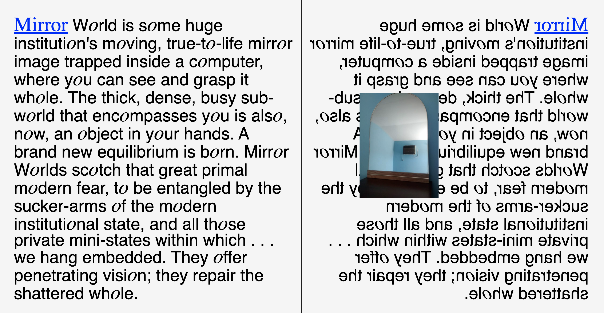
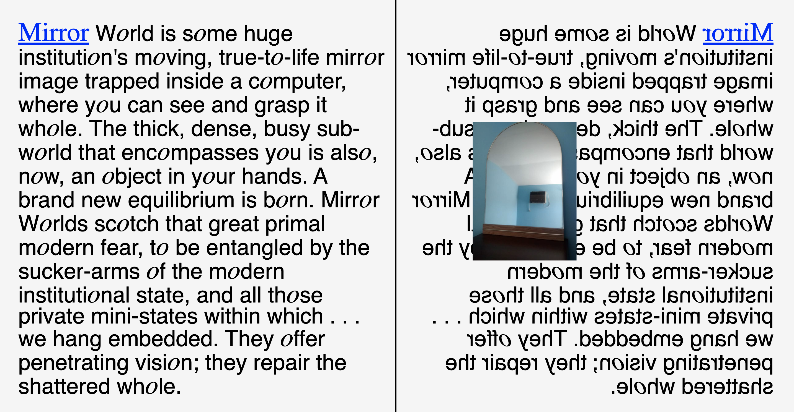

P2: MIRRORWORLD
Mirror World is some huge institution's moving, true-to-life mirror image trapped inside a computer, where you can see and grasp it whole. The thick, dense, busy sub-world that encompasses you is also, now, an object in your hands. A brand new equilibrium is born. Mirror Worlds scotch that great primal modern fear, to be entangled by the sucker-arms of the modern institutional state, and all those private mini-states within which . . . we hang embedded. They offer penetrating vision; they repair the shattered whole.

 
